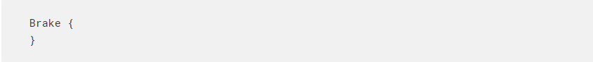
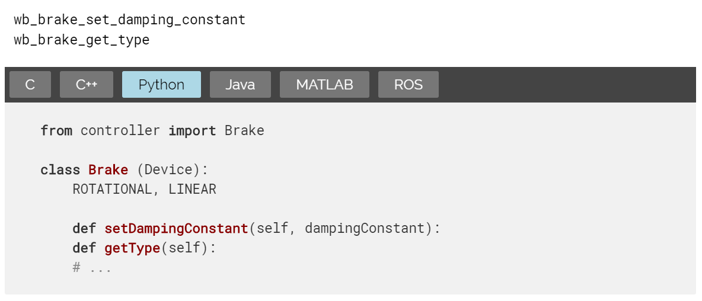
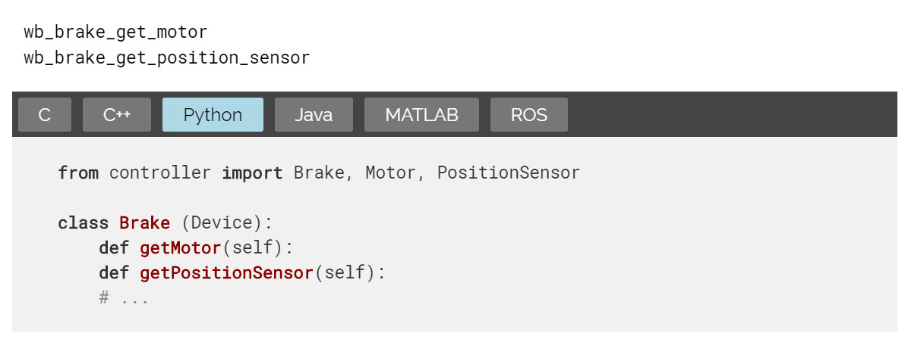

webots介紹翻譯 <<
Previous Next >> Connector 連接器
Brake 制動器
制動器

Description 描述
A Brake node can be used in a mechanical simulation in order to change the friction of a joint. The Brake node can be inserted in the device field of a HingeJoint, a Hinge2Joint, a SliderJoint, or a Track.
可以在機械仿真中按順序使用制動節點改變關節的摩擦力。 制動節點可以插入鉸鏈接頭，鉸鏈雙接頭與滑塊關節或軌道。
剎車功能

Descriptionaul 描述
set the damping constant coefficient of the joint and get the type of brake
The wb_brake_set_damping_constant function sets the value of the dampingConstant coefficient (Ns/m or Nms) of the joint. If any dampingConstant is already set using JointParameters the resulting dampingConstant coefficient is the sum of the one in the JointParameters and the one set using the wb_brake_set_damping_constant function.
The wb_brake_get_type function returns the type of the brake. It will return WB_ROTATIONAL if the sensor is associated with a HingeJoint or a Hinge2Joint node, and WB_LINEAR if it is associated with a SliderJoint or a Track node.
設置關節的阻尼常數係數並獲得制動器的類型
wb_brake_set_damping_constant 為函數設置關節的阻尼常數係數的值（Ns / m或Nms）。如果已經使用JointParameters設置了任何阻尼常數，則所產生的dampingConstant係數是JointParameters中的阻尼常數與使用wb_brake_set_damping_constant函數設置的一個阻尼係數之和。
wb_brake_get_type 函數返回制動器的類型。如果傳感器與HingeJoint或Hinge2Joint節點關聯，它將返回 WB_ROTATIONAL ；如果傳感器與SliderJoint或Track節點關聯，則將返回 WB_LINEAR 。

Descriptionaul 描述
get associated devices
The wb_brake_get_motor and wb_brake_get_position_sensor functions return the Motor and PositionSensor instances defined in the same Joint or Track device field. If none is defined they return 0.
wb_brake_get_motor 和 wb_brake_get_position_sensor 函數返回在相同的Joint或Track設備字段中定義的Motor和PositionSensor實例。 如果未定義，則返回0。
webots介紹翻譯 <<
Previous Next >> Connector 連接器